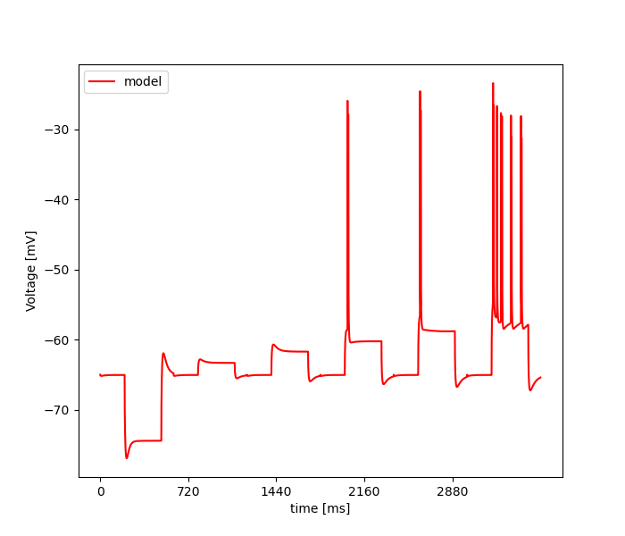

Optimization of load_model_na_inhomo_minimal_model+KM+KA+KD.hoc based on: /home/eslam/gsoc/neuroptimus-hippoUnit/neuroptimus/CA1pyramidal_package/input/somatic_features_neuroptimus.json
Results
| Parameter Name | Minimum | Maximum | Optimum |
|---|---|---|---|
| Na_BG_act_inact_shift 0 | 5.0 | 5.1 | 5.04597905299803 |
| gmax_K_DRS4_params_voltage_dep_dend 1 | 0.08 | 0.12 | 0.09960904528880717 |
| gmax_Na_BG_soma 2 | 0.002 | 0.005 | 0.002 |
| gmax_K_DRS4_params_voltage_dep_soma 3 | 0.01 | 0.018 | 0.018 |
| gmax_K_DRS4_params_voltage_dep_axon 4 | 0.01 | 0.018 | 0.017010377123781673 |
| gmax_Leak_pyr 5 | 4.601756981573536e-05 | 8.601756981573535e-05 | 4.601756981573536e-05 |
| H_ratio 6 | 14.85 | 15.0 | 15.0 |
| e_Leak_pyr 7 | -41.5 | -40.0 | -40.0 |
| gbar_km_soma_dend 8 | 0.0021 | 0.0034 | 0.0021 |
| gbar_km_axon 9 | 0.0001 | 0.00019 | 0.0001 |
| KA_ratio 10 | 2.87 | 3.0 | 2.87 |
| gbar_kd 11 | 1e-05 | 2e-05 | 1.6487035100896067e-05 |
Fitness: [346.8036002404845]

seed = 1235
current_algorithm = {'CMAES_CMAES': {'number_of_cpu': 7, 'number_of_generations': 5, 'sigma': 1.3, 'size_of_population': 21}}
num_params = 12
boundaries = [[5.0, 0.08, 0.002, 0.01, 0.01, 4.601756981573536e-05, 14.85, -41.5, 0.0021, 0.0001, 2.87, 1e-05], [5.1, 0.12, 0.005, 0.018, 0.018, 8.601756981573535e-05, 15.0, -40.0, 0.0034, 0.00019, 3.0, 2e-05]]
starting_points = []
algorithm_parameters = {'number_of_generations': 5, 'size_of_population': 21, 'number_of_cpu': 7, 'sigma': 1.3}
feats = Spikecount, inv_first_ISI, inv_last_ISI, inv_time_to_first_spike, steady_state_voltage, voltage_base, voltage_deflection, voltage_deflection_begin, AHP_depth_abs, AHP_time_from_peak, AP2_amp, AP_amplitude, AP_begin_voltage, AP_duration_half_width, AP_fall_time, AP_rise_time, APlast_amp, time_to_last_spike, sag_amplitude, sag_ratio1
weights = [0.05, 0.05, 0.05, 0.05, 0.05, 0.05, 0.05, 0.05, 0.05, 0.05, 0.05, 0.05, 0.05, 0.05, 0.05, 0.05, 0.05, 0.05, 0.05, 0.05]
user function =
def usr_fun(self,v):
#12
#Na_BG_act_inact_shift 0
#gmax_K_DRS4_params_voltage_dep_dend 1
#gmax_Na_BG_soma 2
#gmax_K_DRS4_params_voltage_dep_soma 3
#gmax_K_DRS4_params_voltage_dep_axon 4
#gmax_Leak_pyr 5
#H_ratio 6
#e_Leak_pyr 7
#gbar_km_soma_dend 8
#gbar_km_axon 9
#KA_ratio 10
#gbar_kd 11
for sec in h.all_dendrites:
sec.Y_v0_Na_BG_dend = sec.X_v0_Na_BG_dend-v[0]
sec.gmax_K_DRS4_params_voltage_dep = v[1]
sec.gbar_km_q10_2 = v[8]
for seg in sec:
h('soma distance()')
dist=(h.distance(seg.x))
seg.gmax_Na_BG_dend = (v[2]+v[2]*(-0.00125)*dist)
if (dist>100) and (dist<=150):
seg.gmax_H_CA1pyr_dist=(v[6]*0.00002+v[6]*4e-07*dist)
seg.gmax_H_CA1pyr_prox=0
seg.gmax_K_A_prox=0
seg.gmax_K_A_dist=(0.0035*v[10]+v[10]*5.5e-05*dist)
elif (dist>150.0) and (dist<=400.0):
seg.gmax_H_CA1pyr_dist=(v[6]*0.00002+v[6]*4e-07*dist)
seg.gmax_H_CA1pyr_prox=0
seg.gmax_K_A_prox=0
seg.gmax_K_A_dist=(0.0035*v[10]+v[10]*5.5e-05*dist)
elif (dist<=100.0) and (dist>0.0):
seg.gmax_H_CA1pyr_dist=0
seg.gmax_H_CA1pyr_prox=(v[6]*0.00002+v[6]*4e-07*dist)
seg.gmax_K_A_prox=(0.0035*v[10]+v[10]*5.5e-05*dist)
seg.gmax_K_A_dist=0
elif (dist>400.0):
seg.gmax_H_CA1pyr_dist=0.00018*v[6]
seg.gmax_H_CA1pyr_prox=0
seg.gmax_K_A_prox=0
seg.gmax_K_A_dist=0.0255*v[10]
elif (dist<=0.0):
seg.gmax_H_CA1pyr_prox=0.00002*v[6]
seg.gmax_H_CA1pyr_dist=0
seg.gmax_K_A_prox=0.0035*v[10]
seg.gmax_K_A_dist=0
for sec in h.soma:
sec.gmax_Na_BG_soma = v[2]
sec.Y_v0_Na_BG_soma = sec.X_v0_Na_BG_soma-v[0]
sec.gmax_K_DRS4_params_voltage_dep = v[3]
sec.gmax_H_CA1pyr_prox = 0.00002*v[6]
sec.gbar_km_q10_2 = v[8]
sec.gmax_K_A_prox=0.0035*v[10]
sec.gkd_kd_params3=v[11]
for sec in h.all_axon:
sec.gmax_Na_BG_axon = v[2]*40
sec.Y_v0_Na_BG_axon = sec.X_v0_Na_BG_axon-v[0]
sec.gmax_K_DRS4_params_voltage_dep = v[4]
sec.gmax_H_CA1pyr_prox = 0.00002*v[6]
sec.gbar_km_q10_2 = v[9]
sec.gmax_K_A_prox=0.0035*v[10]
for sec in h.all:
sec.gmax_Leak_pyr = v[5]
sec.e_Leak_pyr = v[7]